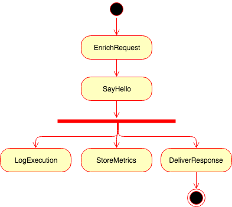
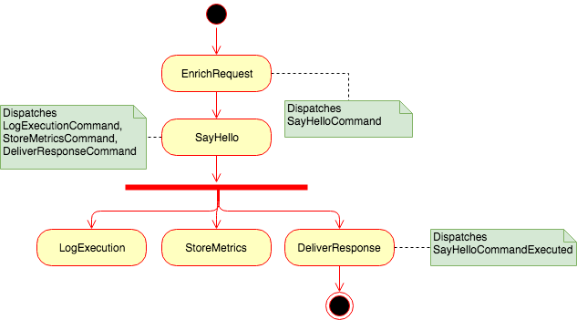

React PHP Applications
A quick overview on component design strategies
Níckolas Daniel da Silva

- Software Engineer
- Fullstack development
- ResearchGate
- I really like PHP <3
Expect...
- PHP
- Design and Patterns
- An incredibly complicated Hello World application
React
PHP
Dafuq?
- Not React JS + PHP
- PHP Library, released in 2012
- Asynchronous PHP
- Native or w/ Extensions
React PHP
- Copy of the Node.js API
- Extensible Event Loop
- Single Threaded
- Has competitors: Icicle IO, AMP...
Attention!
That's still PHP
Most of its functions are synchronous and blocking
by default
How does it look like?
$loop = EventLoopFactory::create();
$loop->addTimer(1, function () {
echo 'Hello Reactive World!';
});
$loop->run();
But why?
- PHP is versatile
- You probably already know it
- Extensible
- Existent codebase
- and also...
How it shouldn't look like!
$loop = EventLoopFactory::create();
$loop->addTimer(1, function () {
fwrite(STDOUT, 'Hello world!'); // NOOOOO
});
$loop->run();Behold!!
[Code]The most overcomplicated Hello World![/Code]
Ermm...
Looks quite messy, right?
Let's fix this whole mess!
const express = require('express')
const app = express()
app.get('/', function (req, res) {
res.send('Hello world!')
})
app.listen(8080)I'm clearly joking :P
Request Handlers
This is an easy win to isolate your components
class SayHello
{
public function __invoke(Request $req)
{
$res = new Response(200);
$name = $req->getQueryParams()['name'];
$res->getBody()->write("Hello {$name}!");
return $res;
}
}BUT!
It is still synchronous.
Notice how it returns response immediately!
class SayHello
{
public function __invoke(Request $req)
{
$res = new Response(200);
$name = $req->getQueryParams()['name'];
$res->getBody()->write("Hello {$name}!");
return $res; // Pretty damn sync
}
}Add promises then!
class SayHello
{
public function __invoke(Request $req)
{
return new P\Promise(function ($resolve) use ($req) {
$res = new Response(200);
$name = $req->getQueryParams()['name'];
$res->getBody()->write("Hello {$name}!");
return $resolve($res);
});
}
}Decoupling...
What do the handlers handle?
Commands!The command pattern
- Object-oriented callback
- Encapsulate a request as an object
- Let the handler be free
From the previous example...
/**
* @param Psr\Http\Message\ServerRequestInterface $req
* @return P\Promise
*/
public function __invoke(Request $req)
{
return new P\Promise(function ($resolve) use ($req) {
$res = new Response(200);
$name = $req->getQueryParams()['name'];
$res->getBody()->write("Hello {$name}!");
return $resolve($res);
});
}Create a SayHelloCommand
class SayHelloCommand
{
private $name;
public function __construct(string $name)
{
$this->name = $name;
}
public function name(): string
{
return $this->name;
}
}Refactor the handler
- Command class as the input
- StreamInterface as the output
class SayHello
{
/** @var StreamInterface */
private $output;
public function handle(SayHelloCommand $cmd)
{
return new P\Promise(function ($resolve) use ($cmd) {
$this->output->write("Hello {$cmd->name()}!");
return $resolve();
});
}
}Somewhere...
$handler = new SayHello($res->getBody()); // Use DI, please
$name = $req->getQueryParams()['name'];
$handler->handle(new SayHelloCommand($name))
->then(function () use ($resolve, $response) {
return $resolve($response);
});This is pretty damn boring to test!
Handlers with no return
class SayHello
{
/** @var StreamInterface */
private $output;
public function handle(SayHelloCommand $cmd)
{
$this->output->write("Hello {$cmd->name()}!");
}
}
$handler->handle(...)->then(...); // ????Events!
Be agnostic :)
class SayHello
{
/** @var StreamInterface */
private $output;
public function handle(SayHelloCommand $command)
{
$this->output->write("Hello {$command->name()}!");
emitter()->emit(
SayHelloCommandExecuted::class,
[$command->name()]
);
}
}
$handler->handle(...)->then(...); // ????Beautiful!
Now we have events, we can react to them!
emitter()->on(SayHelloCommandExecuted::class,['logExecution']);
emitter()->on(SayHelloCommandExecuted::class,['storeMetrics']);
emitter()->on(SayHelloCommandExecuted::class,['other...']);Not so fast!
What if...
emitter()->on(SayHelloCommandExecuted::class, ['storeMetrics']);
function storeMetrics(SayHelloCommandExecuted $event)
{
try {
// magic thing to store the metrics
} catch (TemporaryIssueException $e) {
emitter()->emit(
SayHelloCommandExecuted::class,
[$event]
); // Emmit again, so it tries again. Right?
}
}React to events, act through commands
Act through commands
emitter()->on(
SayHelloCommandExecuted::class,
'onSayHelloExecuted'
);
function onSayHelloExecuted(SayHelloCommandExecuted $event)
{
emitter()->emit(LogExecutionCommand::class, [$event]);
emitter()->emit(StoreMetricsCommand::class, [$event]);
emitter()->emit(OtherStuffCommand::class, [$event]);
}
Actions are isolated now
emitter()->on(StoreMetricsCommand::class, ['storeMetrics']);
function storeMetrics(StoreMetricsCommand $event)
{
try {
// magic thing to store the metrics
} catch (TemporaryIssueException $e) {
emitter()->emit(
StoreMetricsCommand::class,
[$event]
); // Now it is a bit safer :)
}
}But I need to compose!
In fact actions are isolated now, but they belong to the same request. How could we coordinate such thing?
We need flows
As we create independent and self-contained tasks something is needed to make them work together!
Proposition

Enterprise Integration Patterns
Presents two topologies for Message-Driven architectures:
- Broker
- Mediator
Broker
Every command knows the next to be executed
EnrichRequest
function enrichRequest(RequestInterface $req)
{
$uuid = Uuid::uuid4();
$name = $req->getServerParams()['name'];
$command = new SayHelloCommand($uuid, $name);
emitter()->emit(SayHelloCommand::class, [$command]);
}SayHello
public function handle(SayHelloCommand $command)
{
$this->output->write("Hello {$command->name()}!");
$e = emitter();
$logRequest = new LogRequestCommand($uuid, /* whatever */);
$e->emit(LogRequestCommand::class, [$logRequest]);
$storeMetrics = new StoreMetricsCommand($uuid, /* whatever */);
$e->emit(StoreMetricsCommand::class, [$storeMetrics]);
$deliverResponse = new DeliverResponseCommand($uuid, /* whatever */);
$e->emit(DeliverResponseCommand::class, [$deliverResponse]);
}Looks good
Once you have such structure you may fail as much as you want,
retry even more and so on.
It couples your commands though...
Mediator
One single process responsible for your flow!
Adds a bit more complexity, but also makes your commands independent again
Making our lives easier
trait CommandTrait
{
public static function ofId(UuidInterface $uuid): string
{
return self::class.$uuid->toString();
}
}
class SayHelloCommand
{
use CommandTrait;
// previous implementation ...
}Suffixed command events
$uuid = Uuid::uuid4();
echo SayHelloCommand::ofId($uuid);
// SayHelloCommandf11bbfcc-0095-474e-a8c7-48a363bcb9ee
Mediator
class SayHelloFlow
{
public function __construct()
{
emitter()->on(
RequestReceived::class,
[$this, 'onRequest']
);
}
//...public function onRequest(RequestReceived $req)
{
$uuid = Uuid::uuid4();
// ignore duplicated requests
if ($this->wasRequestAlreadyReceived()) return;
$e = emitter();
// Suffixed callback event: onSayHelloExecuted
$e->on(SayHelloCommandExecuted::ofId($uuid), [$this, 'onSayHelloExecuted']);
$e->emit(
// Suffixed command: only this instance dispatches it
SayHelloCommand::ofId($uuid),
[new SayHelloCommand($req->name())]
);
}Gets every time more complex!
- Don't forget about the promises
- Use commands and events when necessary
- Keep testability in mind
- And your deadlines ;)
Wrap up!
- PHP + Event Loop
- Extensible Event Loop
- Has competitors
- PHP is blocking, be careful
- Callbacks sucks
- Use promises then
- Decouple to commands
- Promises can also suck!
- Use events
Take proper care of your events
Final thoughts
This obviously don't apply only to React PHP
But of course you can now write shiny programs with it
“Knowledge is knowing that a tomato is a fruit, wisdom is not putting it in a fruit salad.” - Miles Kington